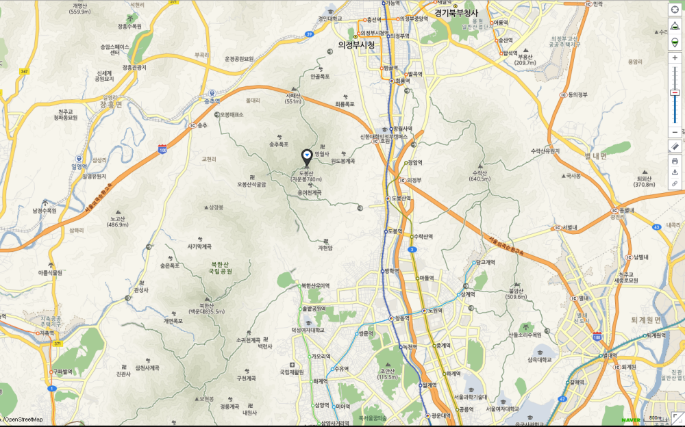

도봉산 남서쪽 도봉계곡에는 조선시대 선비들이 휴양을 즐기던 곳으로 알려져있다. 그리고 도봉서원이 위치하는데 조선시대 개혁파였던 조광조의 위패를 봉안하는 곳이다. 또한 우암 송시열의 도봉동문이라는 암각화가 전해진다. 산중에는 인근 60여 개 사찰이 있으며 제일 오래된 사찰은 천축사(天竺寺)로 무학대사가 조선왕조 창건과 함께 중창하였다고 전해진다. 도봉산 석굴암은 신라시대 의상대사가 창건하였다고 전해지며 그리고 일제강점기 때 김구 선생이 일본군 중위를 죽이고 숨어지내던 곳이라고 전해진다. 그외 사찰로는 망월사(望月寺)·쌍룡사(雙龍寺)·회룡사(回龍寺) 등이 유명하며 연중 참례객·관광객이 찾는다.
동쪽으로 서울과 의정부 간의 국도, 서쪽으로 구파발(舊把撥)과 송추(松湫)의 간선국도가 통하여 교통이 편리하다. 도봉산의 3대 계곡은 문사동계곡, 망월사계곡(원도봉계곡), 보문사계곡(무수골)으로서 이 계곡들이 바로 산행기점과 연결되는데, 도봉동계곡·송추계곡·망월사계곡·오봉계곡·용어천계곡 등도 유원지로 개발되어 수락산(水洛山)·불암산(佛岩山) 등과 함께 좋은 등산코스를 이루고 있다. 도봉산의 대표적인 등산로는 도봉산역에서 도봉계곡을 따라 오르는 길인데 도봉서원을 지나 약 1km를 더 오르면 도봉산장이 나오고 이곳에서 다시 1km를 더 오르면 정상에 도달한다. 도봉서원을 지나면서 부터는 거북암, 마당바위 등 많은 등산로 갈림길이 있다.
그리고 우이동으로 오르는 등산로가 있고 송추유원지에서 오르는 길이 있는데 계곡의 맑은 물과 주변 경관이 매우 뛰어난 곳이다. 의정부 안골에서 오르는 길은 도봉산 북쪽에서 시작하는 등산로이며 성불사를 지나 사패산 능선으로 오르는 길이다. 한편, 북한산과의 경계를 이루고 있는 우이령을 포장도로로 건설하려 하였으나, 환경보호단체들의 제기한 생태계 파괴가 우려되어 취소되었다
